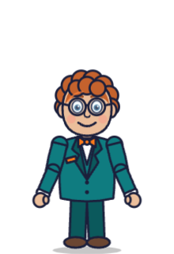
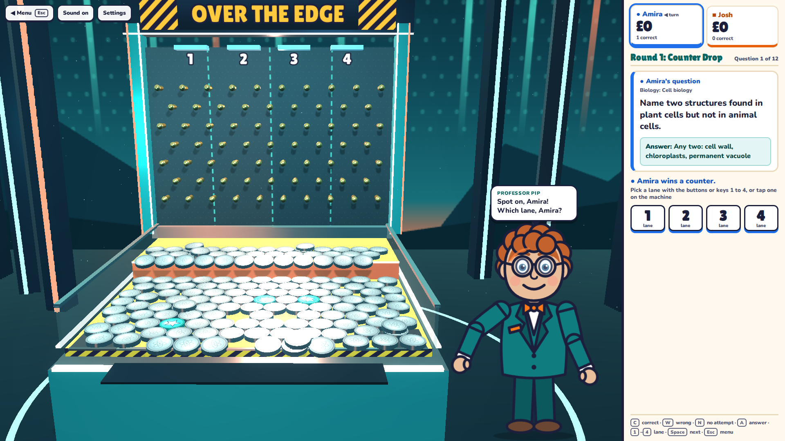
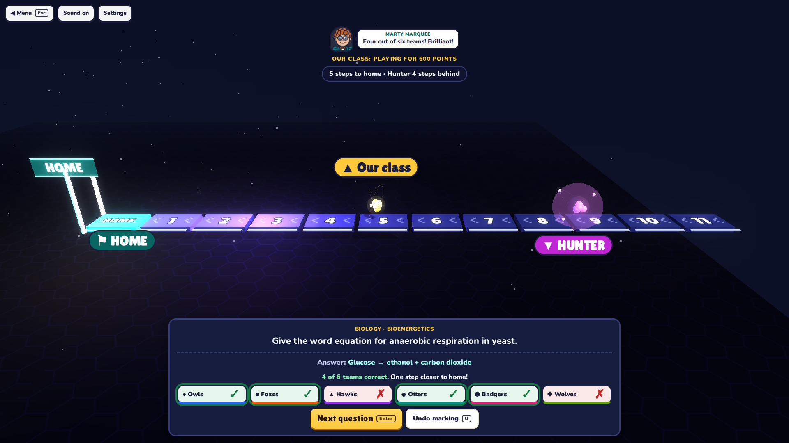
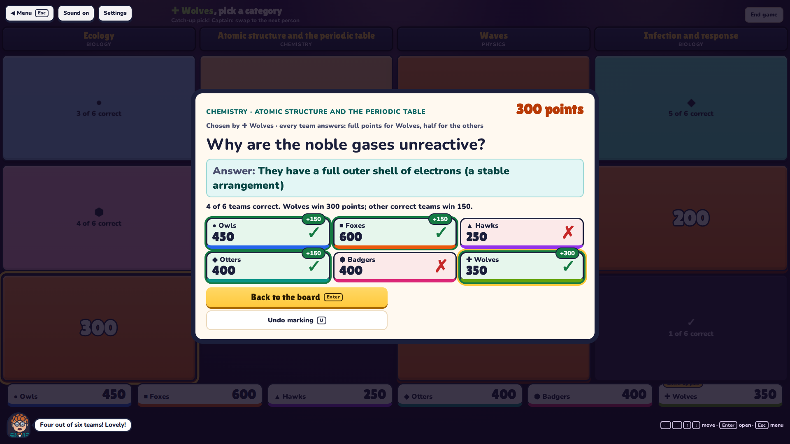
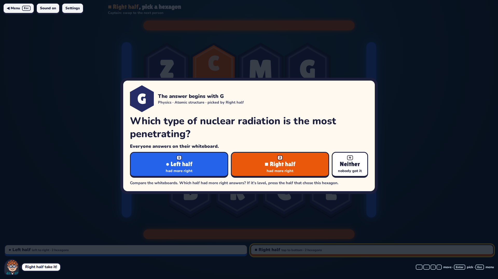
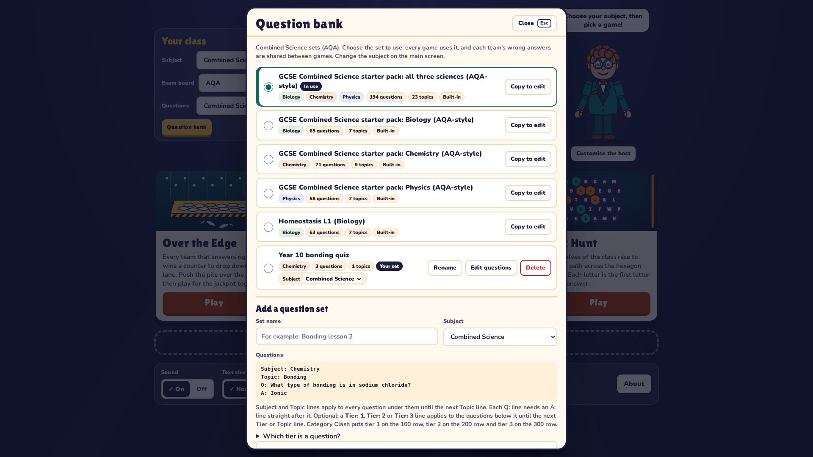

Four revision games for the front of the classroom, inspired by classic TV quiz formats. They share one question bank and run from a single file, with no internet connection, logins or installs.

Every team that answers right wins a counter to drop down a lane onto a moving shelf. Counters pushed over the front edge win £100. In the final, the whole class plays together to push the gold jackpot counter over the edge for £5,000.
The whole class is one runner. Vote for a deal, then answer your way home before the Hunter catches you. One Deal Round, then a 60-second Final Sprint against a target set by the pot.
A board of four categories and points values from 100 to 300. Teams take turns to choose and every team answers; harder questions are worth more, and one hidden ★ tile is worth double.
A board of lettered hexagons. Each letter is the first letter of the answer. Win a hexagon to claim it and pick the next; the first half to link its two edges wins.
Built-in packs are science only for now. Biology, Chemistry, Physics and Combined Science have them; Maths, English, History and Geography are ready for your own sets, with built-in packs coming. The built-in packs are AQA-style; Edexcel packs are coming, and until then choosing Edexcel shows the same packs.
Split about 30 students into 2 to 6 teams with mini whiteboards. Every game works the same way:
Captains rotate. When a team makes a choice (a lane, a tile, a hexagon), the screen names the team and says Captain: swap to the next person, so everyone gets a turn at the exciting part.
10 minutes at most each, with time for teams to think, talk and write. Over the Edge: 6 questions then a 4-question final. Outpace: one Deal Round and the Final Sprint. Category Clash: 4 categories of 3 questions. Hex Hunt: one round on a 4 × 4 board. Each is tuned to be close, and the class wins the jackpot or the sprint about half the time. Press End game (Category Clash) or ◀ Menu to stop early.
Every game ends with the questions most teams got wrong, with the answers and topics, so you know what to go over next lesson. It never records anything about individual students.
Every correct team wins a counter. The teams drop in a random order, shown on screen. Captains pick lanes in that order (1–4, tap the machine, or R for random lanes for the rest) and the counters drop together in a few seconds. A counter pushed over the edge goes to the team whose new counter landed nearest to it, shared out so no team is paid twice before every team that dropped has been paid once; its £100 label flashes in that team's colour. Counters that fall before everyone's have landed are shared out when they have. Watch for ★ wildcard counters: a bonus drop, £250, or a steal from the leading team. In the final the whole class plays together for the jackpot, two counters per correct team; a team with no more than half the leader's money drops a catch-up counter as the final starts.
The class votes on the deal by holding up 1, 2 or 3 fingers and you press the majority: Cautious (300 points, Hunter 5 steps back), Standard (600, 3 back) or Bold (1,000, 1 back). If at least half the teams are correct the runner steps forward; otherwise the Hunter gains ("4 of 6 teams correct"). Reach home to bank the deal; if caught, bank half. In the 60-second Final Sprint every correct team is one step towards the target, and the class escapes as soon as it gets there. The racers change with the subject (atoms for science, maths symbols, books, hourglasses, globes); the class is always the gold one and the Hunter the magenta one.
The four columns are topics from the chosen subject: open Topics on the setup screen to choose up to four, or leave it to pick a different mix each game. The rows follow the question tiers: 100 is recall, 200 describe and apply, 300 explain and extend. The choosing team picks a tile; every team answers. The choosing team wins full points if correct, every other correct team wins half, and wrong answers lose nothing. The ★ tile doubles everything. Each team chooses once per round; a team at least 300 points behind gets the first pick of the next round.
Each half can be several table groups. Team 1 links left to right, Team 2 top to bottom. After "show me", compare the whiteboards and press the half that had more right answers (1 or 2, or tap its big button). It wins the hexagon and picks next. If it's level, press the half that chose the hexagon; if nobody got it, press Neither (N). U undoes it. Each letter is the first letter of the answer (ignoring "the", "a" or "an"); answers that are explanations, lists or numbers never go on the board. The gold outline is the keyboard cursor: it appears when you use the arrow keys.




Everything also works by mouse or touch. Keys are shown on the buttons. Enter starts or replays from the setup and results screens, and Esc returns to the menu (you are asked first mid-game).
| Every game | |
|---|---|
| Space | Skip the countdown: "3, 2, 1, show me!" (again to skip the 3, 2, 1) |
| 1–6 | Mark that team ✓ or ✗ |
| C / W | Every team correct / every team wrong |
| Enter | Confirm the marking, then carry on |
| U | Undo the marking |
| Each game | |
|---|---|
| 1–4 / R | Over the Edge: that lane / random lanes for the rest |
| 1 2 3 | Outpace: Cautious, Standard or Bold deal |
| ←→↑↓ Enter | Category Clash and Hex Hunt: move around the board and pick |
| 1 / 2, ← → | Hex Hunt: pick a half, then change its share |
Open Question bank on the menu. Type a name for the set, check its Subject (it starts as the subject chosen on the menu), paste your questions in this format, and press Save as new set:
Subject: Chemistry Topic: Bonding Q: What type of bonding is in sodium chloride? A: Ionic Q: Why can metals conduct electricity? A: They have delocalised electrons that can move through the structure Topic: Rates of reaction Q: Give two ways to increase the rate of a reaction. A: Any two: increase temperature, increase concentration, increase surface area, add a catalyst

Press Save backup file to download one file containing all your own sets and every team's wrong-answer history. On the other computer, open Showtime, choose Question bank → Load backup file and pick that file. Loading a backup only adds; it never deletes anything already there, and loading the same file twice adds nothing new.
History is saved by team name, so use the same spelling each time (capital letters do not matter). The question bank lists every saved team; Clear removes one team's history.
| Setting | What it does |
|---|---|
| Sound | All sounds are short effects made by the browser. There is no music. |
| Text size | Large makes every panel, question and button bigger for the back of the room. |
| Reduced motion | Stops camera sway, screen shake and the flash when the Hunter catches someone, and shows the host's words at once. It starts switched on if your computer asks for reduced motion. |
| Graphics | Low turns off shadows and glow and draws at standard resolution, for older PCs. |
Colours meet the WCAG AA contrast guidelines. Nothing relies on colour alone: teams are also marked ● ■ ▲ ◆ ⬢ ✚ (Team 1 is always blue ●, Team 2 orange ■, Team 3 purple ▲, Team 4 teal ◆, Team 5 pink ⬢, Team 6 green ✚), wildcard counters carry a ★, the Hunter and the runner are labelled, and buttons show ✓ and ✗ as well as green and red.
No data leaves the computer. Showtime makes no network connections at all: no analytics, no tracking, no accounts and no adverts. It even includes a browser security rule that blocks connections.
Question sets, team names, wrong-answer history, the host's look and your settings are saved only in the web browser on the computer you are using (in its local storage). They are not sent to us or anyone else.
For UK GDPR, this means the school stays in control: data stays on the school's device, you can delete a team's history at any time from the question bank, and a backup file is only created when you choose to save one. If you use pupils' names, treat backup files like any other file containing pupil data. You can also use first names, initials or team names instead.
| Problem | What to try |
|---|---|
| The file opens as text, or in a preview pane | Download or copy it to your computer first, then double-click it. Previews in email, Teams or OneDrive cannot run it. |
| "3D graphics are switched off" | Try another browser (Chrome, Edge, Firefox or Safari). If it still appears, ask IT to turn on hardware acceleration in the browser settings. |
| The game is jerky or slow | Set Graphics to Low. Close other tabs and video calls. |
| No sound | Check Sound is on, the board's speakers are on, and the volume is up. Browsers only play sound after the first click or key press. |
| My question sets have gone | Sets are saved in one browser on one computer. Open the same file in the same browser you used before. Private or guest windows forget everything when closed, and some school setups clear browser data at log-off: keep a backup file and load it when needed. |
| "This browser is blocking storage" message | The games still work, but nothing is kept after you close the page. Use a normal (not private) window, or keep a backup file. |
| "No Maths questions yet" and Start is greyed out | That subject has no built-in pack yet. Add your own set in the Question bank, or press Change and choose another subject. |
| "No Q: and A: pairs found" | Check each question line starts with Q: and is followed by a line starting with A:. |
| Text is hard to read from the back | Turn on Large text size and use full screen (F11). |
| I pressed a key and nothing happened | Click once on the game area first, so the browser knows the keys are for the game. Keys are ignored while you type in a box. |
Showtime: Classroom Gameshows, version 1.4.1. Game design and question packs by Rob Pearce. The games are original works inspired by classic TV quiz formats and are not connected with any television programme or broadcaster. AQA is a registered trade mark of AQA Education; the starter packs are AQA-style practice questions and are not endorsed by AQA.
Built with three.js (MIT licence). Fonts: Lilita One and Nunito (SIL Open Font License 1.1). Full licence texts are in the About panel on the menu.